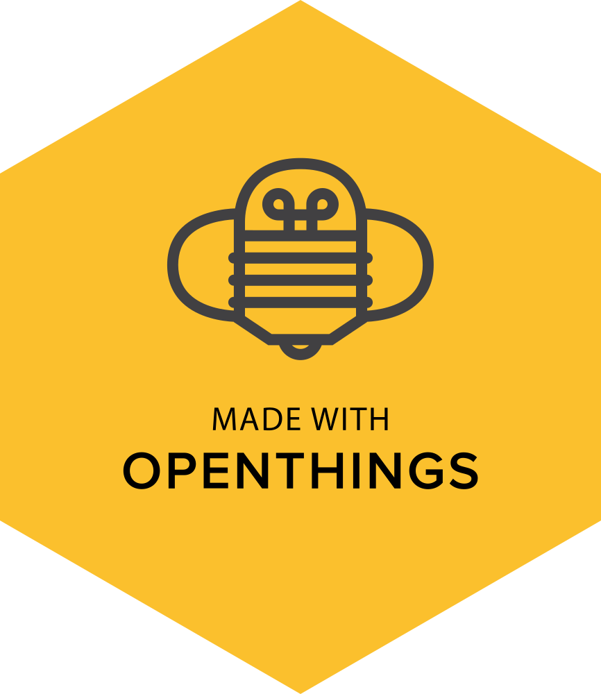

<div id="main" data-lift="surround?with=default;at=content">
    <section class="mainContent standardPage introductionPage">
			<div>
				<section>
					
					<h1>Made with Openthings</h1>
					<p>Made with Openthings is a brand just like made in China or made in the USA. The difference is open things can be made by people everywhere. Openthings allows people flourish through the use of education by sharing. Just like how the bees spread pollen, the people on Openthings spreads knowledge through open design. Designers as bees. Making people flourish.</p>
				</section>
				
				<section>
					<h1>The platform</h1>
					<p>Openthings is a platform passionate about colleborative development where sharing is the foundation. You are encouraged to get involved with your and others’ design, everything is open.</p>
					<p>Openthings is a platform that facilitates anyone to share knowledge, ideas and skill. Together we can make anything for anyone. Join the global collaboration and start sharing.</p>
				</section>
				
				<section>
					<h1>Mission</h1>
					<p>Our mission is to facillitate global collaboration between people. Openthings believes that through designing together and sharing knowledge people are capable of much more. By designing objects or things together we hope to empower people to realise great projects and to flourish.</p>
				</section>
			</div>
    </section>
</div>
